Analytics and Aesthetics
F20DV/F21DV Data Visualisation and Analytics
2021-2022
## Overview * Data Storytelling * Exploratory or Expository * Aesthetics of Data Visualisation * What is Data Clustering * Learning Process * Centroid-based Clustering * K-Means Clustering <aside class='notes'> </aside>
## Learning Outcomes More than just Data * Knowledge of data visualisation processes * Critical awareness of appropriateness and effectiveness of visualisation techniques * Understand and use data analytics algorithms <aside class='notes'> </aside>
## **What type** of visualization would best communicate your results? <aside class='notes'> </aside>
## What is data storytelling? A good Visualisation display tells a story <br> <div style = "text-align: center;"> 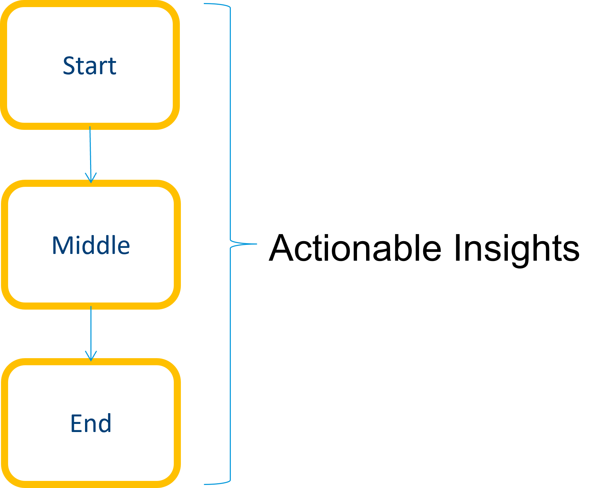</div> <aside class='notes'> </aside>
## What is data storytelling? * Data storytelling uses the data to create **new knowledge** and **new decisions** or actions * Story is meant to explain the data and **why it matters** <aside class='notes'> </aside>
## Why is data storytelling important? * A set of tools and techniques for distinguishing the "forest" from the "trees," * To get the big picture from the data details * Extract knowledge from information (data) * Identify patterns in a dataset * Explain those patterns to a wider audience <aside class='notes'> </aside>
## Why is data storytelling important? * Help us **see patterns** and have insights we wouldn't otherwise see * Help **influence** how **people** perceive a topic * Stories help numbers make sense <aside class='notes'> </aside>
## Why is data storytelling important? * Help us quickly and easily **understand** insights and they also help us **remember** * With the power of data comes a lot of responsibility for the **data storyteller** <aside class='notes'> </aside>
## How to tell a story * Provide context for the Visualisation * Know the end purpose of the display * Everything should be made as simple as possible, but no simpler * Present data **without bias** <aside class='notes'> </aside>
## Exploratory Data Visualisation * Explore the dataset * Find new hypotheses * Display the dataset in its entirety and offer interactivity by zoom and filter mechanisms <aside class='notes'> </aside>
#### Exploratory Data Visualisation <div style = "text-align: center;"> <img class="plain" src="./images/lecture2/exploratory.png" width="800" height="auto"></div> <aside class='notes'> </aside>
## Expository Data Viz (presentation) * Aim to expose a specific issue or topic * Interaction is often limited * Present only the data necessary to convey the intended message <aside class='notes'> </aside>
#### Expository Data Viz (presentation) <div style = "text-align: center;"> 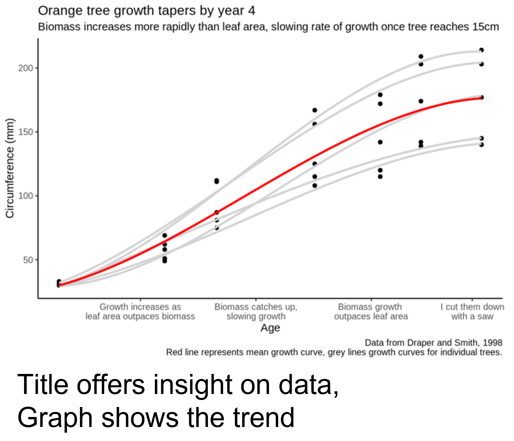</div> <aside class='notes'> </aside>
## Assess value of Visualisation * How **efficiently** and **effectively** knowledge is conveyed * Present information in a way that catches the viewer’s attention * Facilitates reading of the data * Enables the user to detect underlying patterns and trends <aside class='notes'> </aside>
## Aesthetics of Visualisation * **Aesthetics:** visually beautiful and pleasing our eyes * Stir a combination of senses that provide satisfaction to viewer * combination of cognitive and sensory modes of experience * Why the need for aesthetics for Vis? * To enhance viewer engagement <aside class='notes'> </aside>
## Aesthetics of Information Visualisation Can be thought of a scale * From **functional information visualization** * Little aesthetic concerns * Better data readability <aside class='notes'> </aside>
## Aesthetics of Information Visualisation * To **information art** * High aesthetic concerns * Less data readability <aside class='notes'> </aside>
## Aesthetics * **Objectiveness vs. subjectiveness** * Objective portrayal of facts * Insert subjectiveness to direct viewer * **Obscuring vs. revealing information** * Show data artistically to show higher level pattern * Viewer can draw conclusion from underlying data <aside class='notes'> </aside>
## Aesthetics * **Analysis vs. Emotion** * Efficient transfer of knowledge (e.g. stock market display) * Invoke curiosity and interest <aside class='notes'> </aside>
## Aesthetics Model **Mapping Technique** * Direct: viewer is able to infer the underlying data * Indirect: viewer is not able to infer the underlying data, i.e. the graphic is interpretative <aside class='notes'> </aside>
## Aesthetics Model **Data Focus** * Intrinsic * Graphic facilitates the insight to data by cognitively effective means * Graphic considered as a tool for analysis * Extrinsic * Graphic facilitates the communication of meaning implied by the data <aside class='notes'> </aside>
## Pointers for Good Viz * Avoid clutter * Trying to show too much on one layout * Avoid dead space in your layout * E.g. trade-off between size of graph and title/legend * Order of data presentation has meaning * Space and colour matter <aside class='notes'> </aside>
## Augment Display * 2D scatter shows 2 variables * How to show more variables? <div style = "text-align: center;"> 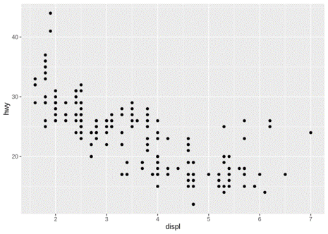</div> <aside class='notes'> </aside>
## Augment Display * Use 3D Visualisation, but can be hard to interpret <div style = "text-align: center;"> 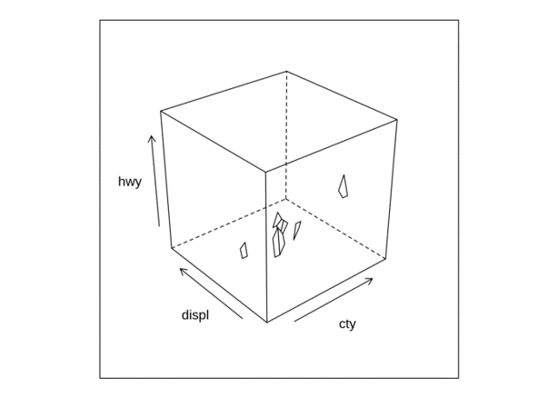</div> <aside class='notes'> </aside>
## Augment Display Make use of * Position (x and y coordinates) * Colour * Shape * Size to visualise more dimensions <aside class='notes'> </aside>
## Augment Display Chernoff Face and multivariate visualisation <div style = "text-align: center;"> 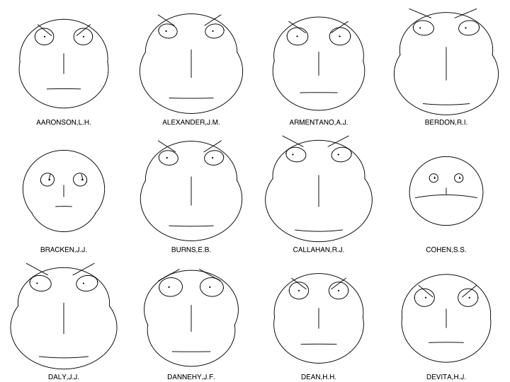</div> <aside class='notes'> </aside>
## Data Clusters <div > 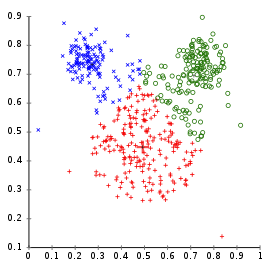</div> <div > 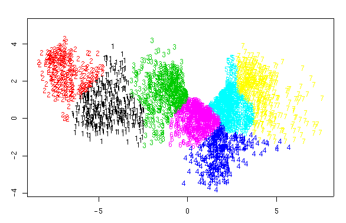</div> <div > 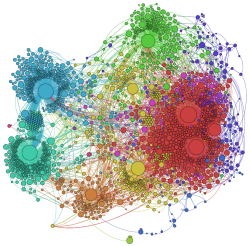</div> <div > 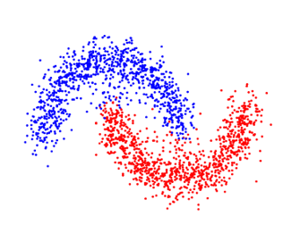</div> <aside class='notes'> </aside>
## What is a cluster * Data vectors that are similar to each other according to some **similarity measure** and dissimilar from other data vectors according to the same similarity measure <aside class='notes'> </aside>
## Data Cluster * Distance between vector x and y <div style = "text-align: right;"> 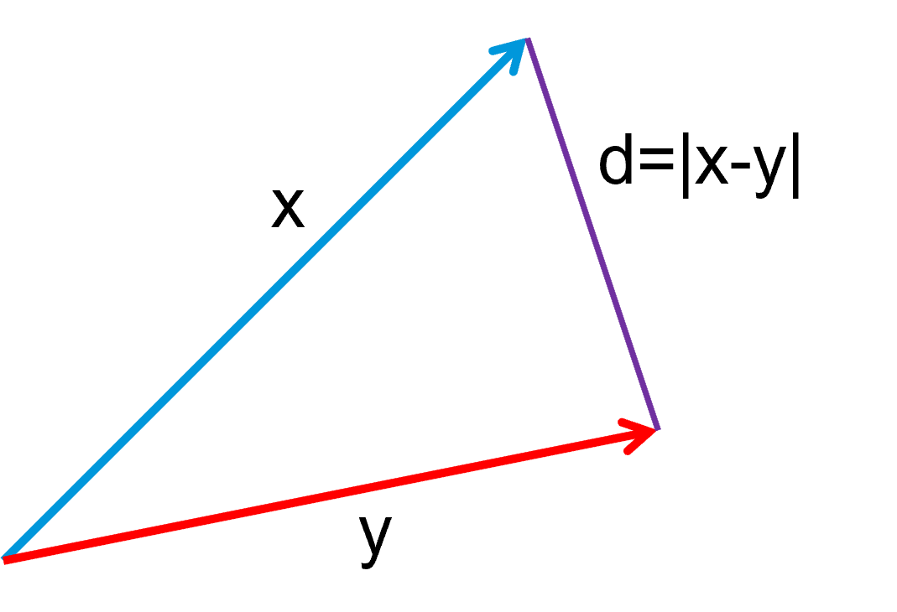</div> * Similarity of data vectors * defined on the basis of distance * alternative similarity definitions – e.g. number of matching features <aside class='notes'> </aside>
## Data Cluster * Being close in terms of some distance measure does not always imply being in the same cluster, the clusters may be determined by similarity defined by features associated with the data vectors <aside class='notes'> </aside>
## Outliers * An outlier * a data vector that belongs to a cluster but is relatively dissimilar from the other members of the cluster * Outliers care onsidered to be outside of clusters <div style = "text-align: center;"> 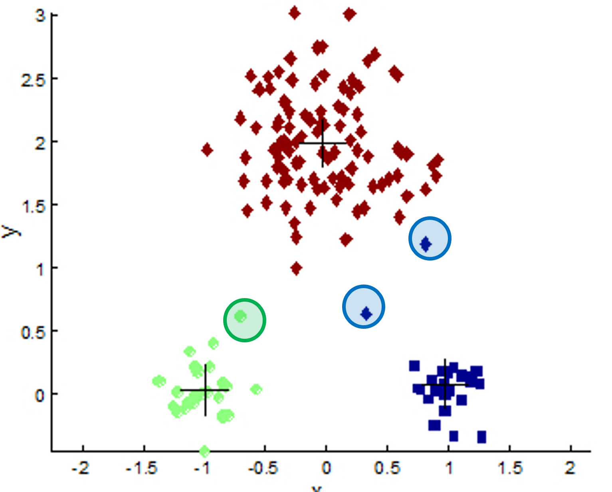</div> <aside class='notes'> </aside>
## Similarity Matrix * Clustering uses **Similarity Matrix** * Ordering of the data vectors * Covered in details in week 7 <div style = "text-align: center;"> 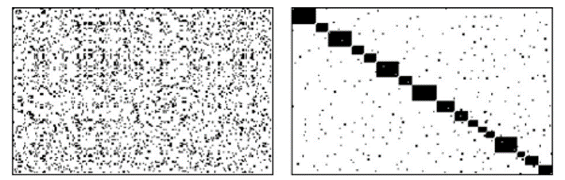</div> <aside class='notes'> </aside>
## Learning Data Clusters **Given a data set, where are the data clusters in it?** * Choose a model of data clusters * Calculate the assignment of data points to clusters given the current model parameters * Assess the correctness of the clustering and revise the model parameters if necessary <aside class='notes'> </aside>
## Model Space <div style = "text-align: center;"> 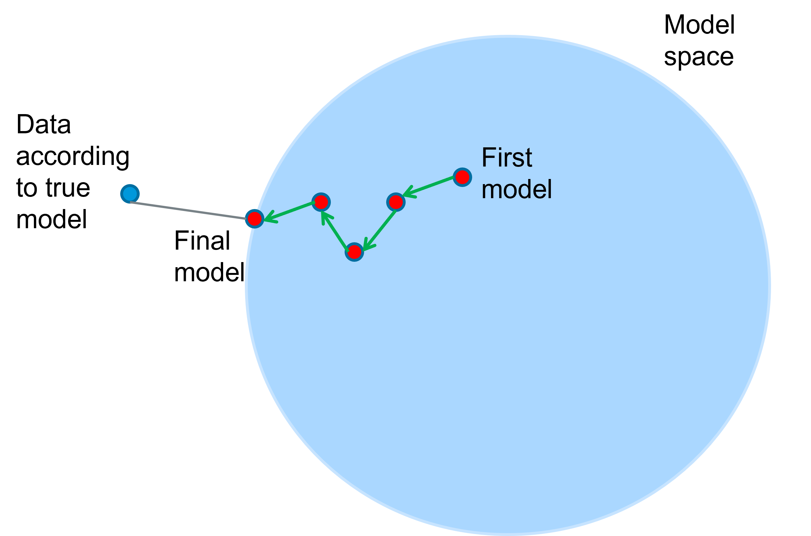</div> <aside class='notes'> </aside>
## Learning Process **Expectation** * Given the current parameters of the model * What is expected about the data * e.g. which data vector belongs to which cluster * How does this differ from what we know about the data <aside class='notes'> </aside>
## Learning Process **Maximization** * Knowing the difference between the expected and actual nature of the data * Re-calculate the parameters to maximize the match between the expected and actual nature of the data <aside class='notes'> </aside>
## Centroid-based Clustering * Centroid of a set of vectors * the average of the vectors (the mean vector of the set) * Each cluster is assumed to be defined by the centroid of the cluster <aside class='notes'> </aside>
## Centroid-based Clustering * A data vector is assumed to belong to the data cluster which has its centroid closest to the data vector <div style = "text-align: center;"> 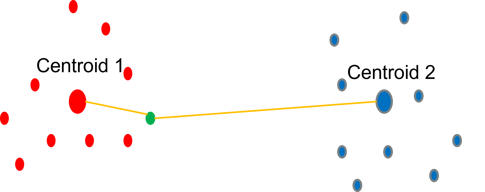</div> <aside class='notes'> </aside>
## K-Means Clustering * k = number of data clusters defined by their centroids * k is given (i.e. not determined from the data) **Objective** * Group data points together based on the K clusters <aside class='notes'> </aside>
## K-Means Clustering * Learning the centroids of the k clusters: * Start with a random assignment of the centres (e.g. randomly pick k data vectors as the assumed centroids of the clusters) * Assign the data points to the clusters on the basis of their distance from the currently assumed centroids * Recalculate the centroids of each cluster by considering the data vectors assigned to each cluster <aside class='notes'> </aside>
## K-Means Clustering <div style = "text-align: center;"> 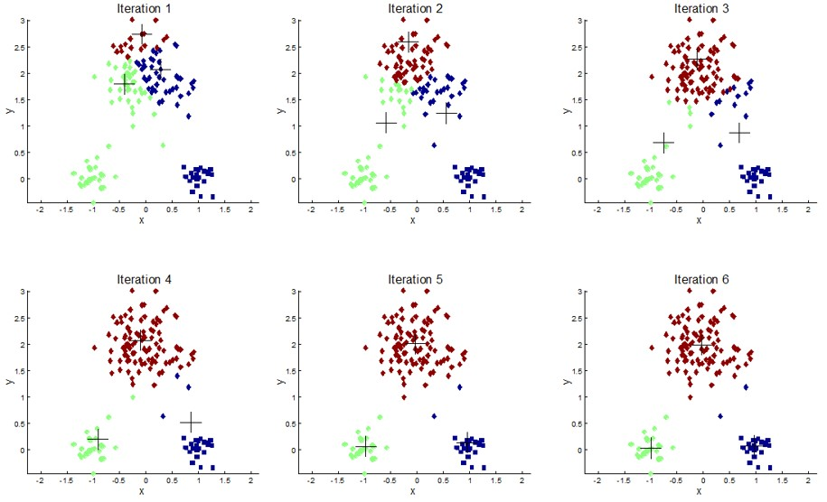</div> <aside class='notes'> </aside>
## K-Means Clustering Learning the centroids of the k clusters: * Stop the learning when the centroids do not move any further * Assess the quality (goodness) of clustering by measuring how consistent are the clusters * E.g. by counting how many data vectors are such that the difference between their distances from their two closest centroids is less than threshold value <aside class='notes'> </aside>
## Stopping Condition * Stopping Condition * Stop if no change in centroids * Convergence: * Converges for Euclidean distance * May not converge for other distance metrics <aside class='notes'> </aside>
## Optimisation * Minimise sum of squared distances within a cluster <aside class='notes'> </aside>
## K-Means Number of Clusters * The number of clusters is a set parameter of the method * There is no heuristic about the choice of the number of clusters; in general this is assumed to be based on some form of prior knowledge or intuition * More systematic alternative * calculate the clustering for a range of k values and choose the best clustering <aside class='notes'> </aside>
## Goodness of Clustering * Repeat the clustering with the same k value but different randomly chosen initial cluster centroids and measure the overlap between the resulting clusters from different runs * Pick the k value for which the overlap measure is the best <aside class='notes'> </aside>
## Goodness of Clustering * Measure the cohesion and separation of clusters * Pick k for which the combined cohesion and separation measure is the best <aside class='notes'> </aside>
## Summary * Data Storytelling * Exploratory or Expository * Aesthetics of Data Visualisation * What is Data Clustering * Learning Process * Centroid-based Clustering * K-Means Clustering <aside class='notes'> </aside>
## To do this week ... * Read over the lectures * **Review** the revision questions * Work through tutorial practicals * Experiment (get into good habits) <aside class='notes'> </aside>
## Further Reading * Alexander Lang. Aesthetics in information visualization.Technical report, University of Munich, Department of Com-puter Science, 2010 * Sack, W., 2011. Aesthetics of information visualization. Context providers: Conditions of meaning in media arts, pp.123-50 * https://towardsdatascience.com/the-art-and-science-of-data-visualization6f9d706d673e <aside class='notes'> </aside>
## Further Reading * A. Lau and A. V. Moere. Towards a model of information aesthetics ininformation visualization. InIV ’07: Proceedings of the 11th Interna-tional Conference Information Visualization, pages 87–92, Washington,DC, USA, 2007. IEEE Computer Society * Chernoff, Herman. "The Use of Faces to Represent Points in K-Dimensional Space Graphically." Journal of the American Statistical Association 68.342 (1973): 361. Web <aside class='notes'> </aside>